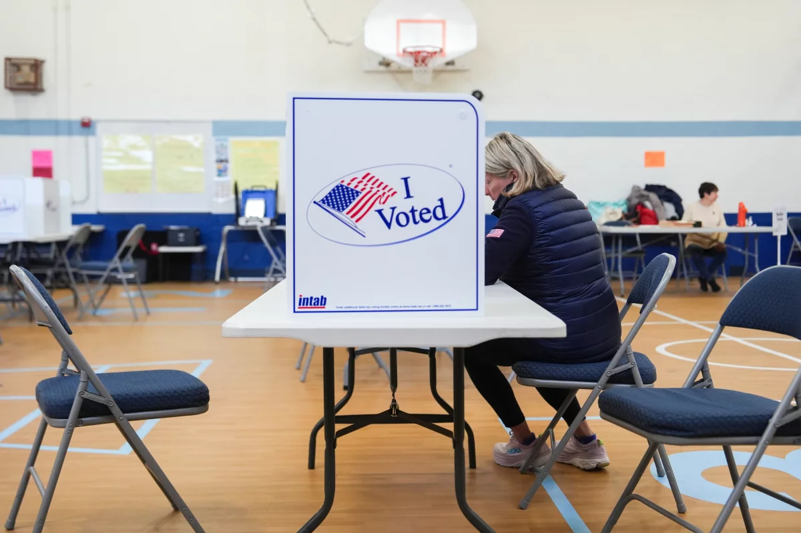

Breaking News
 April 22
April 22
by Olivia Bennett
Virginia voters approved a redistricting measure that could help Democrats flip key House seats, intensifying the national battle for control of Congress.
Virginia voters have approved a redistricting measure that could hand Democrats control of the thinly-divided US House of Representatives in the midterm elections later this year. The ballot measure will redraw the state's congressional map to help Democrats flip as many as four House seats held by Republicans. Democrats currently hold six of Virginia's eleven seats, and the revised map might allow them to hold up to ten. Virginia voters have delivered a huge victory to Democrats, as the state prepares to redraw congressional districts ahead of this year's midterm elections. According to a race call by The Associated Press, a narrow majority of Virginia voters approved a ballot measure proposed by the Democratic-led legislature that allows lawmakers to bypass the state's bipartisan redistricting commission and create more seats for Democrats. The new map might allow Democrats to win 10 of the state's 11 congressional seats, up from the six they currently hold. A four-seat increase might have a significant impact on Democrats' efforts to win the House this autumn.
This could have a real impact on who controls Congress. By redrawing the map, Democrats in Virginia could flip several seats — and in a closely divided House, even a few seats can tip the balance. It also shows how much redistricting has become a political battleground on both sides.
The state is the latest to join a nationwide redistricting arms race sparked by President Donald Trump's call for conservative states to redraw voting boundaries to help Republicans maintain their narrow congressional majority. Control of Congress will be decided in the November midterm elections, and each of these newly formed districts may determine which political party wins the House. Historically, the reigning president's party would lose House seats in this legislative election. If Democrats win the November election, it will not only be a setback to Trump's political goals, but it may also open him up to Democratic-led congressional probes. Texas became the first state to launch a mid-decade change amid pressure from Trump, setting off a race for other states to alter their maps to help their respective political parties. Texas' new plan will give Republicans an advantage in five additional seats, whereas California voters adopted their own model, giving Democrats an advantage in five new districts. Other Republican-led states, such as North Carolina and Missouri, have approved redrawn maps that give the party an advantage.
The redistricting referendum is by far the most costly ballot item in Virginia history, with both sides raising more than $80 million. The map's supporters spent more than $56.4 million on advertising, more than doubling the amount spent by opponents. Democratic leaders, including former President Barack Obama and House Democratic Leader Hakeem Jeffries, praised the reform as vital to fight Republican advantages. Virginia House Speaker Don Scott said the ruling would alter the course of the November elections and help level the playing field nationally. Trump opposed the plan, claiming that if Democrats win the House majority, it would be disastrous, and cautioned people not to approve the referendum. Republican leaders such as Mike Johnson and former Virginia Governor Glenn Youngkin pushed against the proposal.
In the US, gerrymandering, the redrawing of electoral boundaries to favour a political party, is only illegal if it is based on race. Tuesday’s referendum drew a multimillion-dollar campaign to persuade Virginians to alter the state constitution to temporarily allow lines crafted by the state’s Democratic-controlled legislature to govern upcoming elections. In interviews at polling places, voters said they weren’t enthusiastic about redistricting but decided to support the map nonetheless. Some voters said they were concerned about an unlevel playing field and saw the move as a way to counter actions taken by other states. Opposition groups argued that the new map could dilute the influence of historically marginalized communities, while supporters rejected those claims.
Despite Democrats’ victory, Virginia voters may not have the last word on redistricting. The Virginia Supreme Court is still weighing legal challenges to the referendum, which could affect whether the new districts are used in upcoming elections. Republicans have indicated they will continue to pursue legal action against the plan. Florida is also expected to enter the redistricting battle, with Governor Ron DeSantis calling for a special session to consider new congressional maps. The result in Virginia is a big step forward in the battle for control of Congress across the country. Both parties are still changing the maps to try to get an edge before the midterm elections.
Keep an eye on two things: how other states react and whether the courts let the new map stand. There are fights over redistricting all over the country, so what happens here could be part of a bigger change that happens before the midterms.

Olivia Bennett is a U.S. political correspondent reporting on federal policy, election developments, and national governance issues.